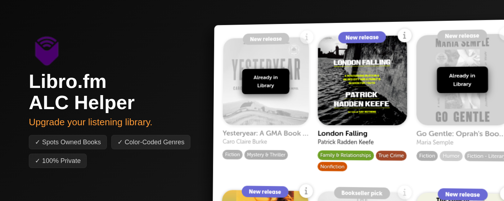

Products
This is where I'll share the products I'm working on, along with updates and notes about them. It's a mix of side projects, experiments, and (eventually) products that I'm proud of.
ALC Helper for Libro.fm
Chrome Extension

For members of Libro.fm's Audiobook Listening Copy (ALC) program, this Chrome extension identifies already purchased audiobooks and adds colorful genre tags to the ALC list.